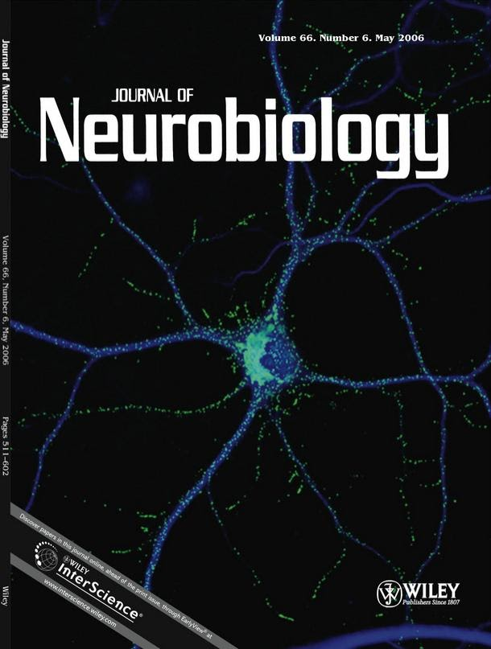
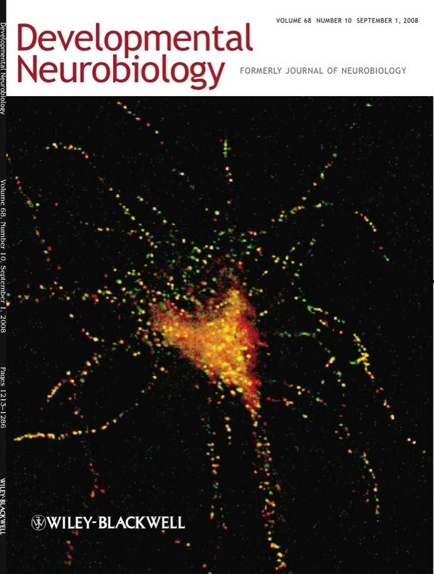

Bethe A. Scalettar is a professor of physics at Lewis & Clark College in Portland, OR. She joined the College
in 1993 after receiving an undergraduate degree from the University of California at Irvine (majors, physics
and mathematics), a PhD in biophysics from the University of California at Berkeley, and completing
postdoctoral work at the University of California, San Francisco. Since arriving at Lewis & Clark College,
Bethe’s research and publications have focused primarily on elucidating the molecular basis of learning
and memory, utilizing fluorescence microscopy as a primary tool. Bethe also has worked to enhance the
interdisciplinary appeal of physics, most notably with the development of an undergraduate physics
course entitled “Biomedical Imaging” and the writing of this supporting textbook.
Email: bethe@lclark.edu
Website: https://college.lclark.edu/live/profiles/80-bethe-scalettar
James R. Abney is an intellectual property attorney at Psi Star Intellectual Property LLC in Portland, OR. He
began practicing law in 1997 after receiving undergraduate degrees in physics and biology from the
University of California at Irvine, a PhD in biophysics from the University of California at Berkeley,
completing postdoctoral work at the University of California, San Francisco, and earning a JD from Lewis
& Clark College Law School. Jim’s research and publications, which have continued during his legal career,
have focused on the use of biophysical, notably fluorescence-based, techniques to answer questions about
cell structure and function. Jim’s legal work has spanned multiple technologies useful in science and
medicine, including scientific instrumentation (especially light sources, detectors, and optics), medical
devices, and biotechnology.
Email: james.abney@psistarip.com
LinkedIn: https://www.linkedin.com/in/jrabney/


Cyan Cowap is an assistant supervisor for the YMCA’s Expanded Learning Program, currently working at
Empower Language Academy in San Diego, California. She joined the Academy in 2019 after receiving an
undergraduate degree from Lewis & Clark College (major in studio art, minor in rhetoric and media
studies) and studying for a semester at Queen Mary University of London. During her college years, Cyan
held several long-term positions as an illustrator most notably for the weekly Lewis & Clark College
publication, The Pioneer Log. More recently, Cyan has collaborated with Bethe A. Scalettar and James R.
Abney to create a textbook with hundreds of esthetically appealing illustrations that enhance
understanding of key scientific and medical concepts.
Email: cyancowap@gmail.com
LinkedIn: https://www.linkedin.com/in/cyan-cowap-814887117/
This website was developed in collaboration with students in Professor Peter Drake’s Software Development course (CS488) at Lewis & Clark College.